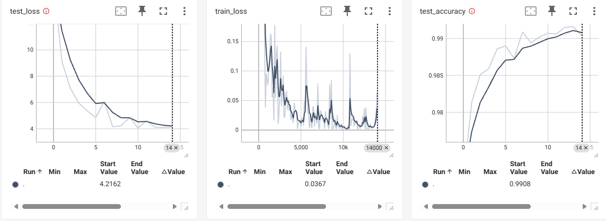
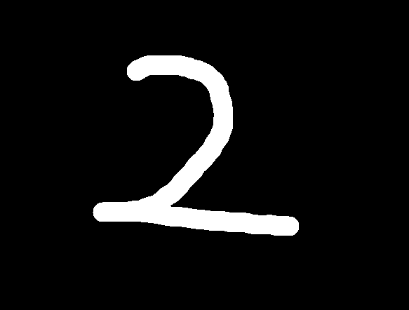

基于PyTorch的手写数字识别
MNIST数据集
MNIST 是一个经典的手写数字识别数据集，包含 60,000 张用于训练的图片和 10,000 张用于测试的图片。每张图片分辨率为 28×28 像素，内容是数字 0–9 的手写体。我们将基于该数据集对模型进行训练和验证。

神经网络的定义
输入
- 一张图片大小：
1 × 28 × 28（灰度图，通道数 = 1）
第一层卷积
nn.Conv2d(in_channels=1, out_channels=16, kernel_size=5, stride=1, padding=2)
- 输入：
1 × 28 × 28 - 卷积核：5×5，padding=2 → 输出大小仍然是 28×28
- 输出：
16 × 28 × 28（提取 16 个不同特征图）
ReLU 激活
nn.ReLU()
- 不改变形状，只是把负数变成 0。
- 输出：
16 × 28 × 28
第一次池化
nn.MaxPool2d(kernel_size=2)
- 池化窗口：2×2，步长=2 → 尺寸减半
- 输出：
16 × 14 × 14
第二层卷积
nn.Conv2d(in_channels=16, out_channels=32, kernel_size=5, stride=1, padding=2)
- 输入：
16 × 14 × 14 - 输出：
32 × 14 × 14
ReLU 激活
nn.ReLU()
- 输出：
32 × 14 × 14
第二次池化
nn.MaxPool2d(kernel_size=2)
- 尺寸再减半
- 输出：
32 × 7 × 7
展平
nn.Flatten()
- 把
32 × 7 × 7展平成一维向量 - 输出：
32*7*7 = 1568
全连接层 1
nn.Linear(32*7*7, 500)
- 输入：
1568 - 输出：
500
ReLU 激活
nn.ReLU()
- 输出：
500
全连接层 2
nn.Linear(500, 100)
- 输入：
500 - 输出：
100
全连接层 3（输出层）
nn.Linear(100, 10)
- 输入：
100 - 输出：
10（对应数字 0–9 的类别）
总结
网络的流程就是：
输入 1×28×28 图像 → 两次卷积 + ReLU + 池化提取特征 → 展平 → 三层全连接分类 → 输出 10 个类别的分数（预测数字 0–9）。
存在的问题
全连接层数量和大小
- 两个全连接层（500 → 100 → 10）对 MNIST 来说稍微大了一点
- 可以简化为
500 → 10或256 → 10，训练更快，参数更少
卷积层通道数
- 第一层 16、第二层 32 可以再小一点（如 8 → 16），MNIST 太简单了，用太多特征图可能没必要
代码
import torch
from torch import nn
class Net(nn.Module):
def __init__(self, *args, **kwargs) -> None:
super().__init__(*args, **kwargs)
self.model = nn.Sequential(
nn.Conv2d(in_channels=1, out_channels=16, kernel_size=5, stride=1, padding=2),
nn.ReLU(),
nn.MaxPool2d(kernel_size=2, ceil_mode=False),
nn.Conv2d(in_channels=16, out_channels=32, kernel_size=5, stride=1, padding=2),
nn.ReLU(),
nn.MaxPool2d(kernel_size=2, ceil_mode=False),
nn.Flatten(),
nn.Linear(32 * 7 * 7, 500),
nn.ReLU(),
nn.Linear(500, 100),
nn.Linear(100, 10)
)
def forward(self, x):
x = self.model(x)
return x
if __name__ == '__main__':
net = Net()
print(net)
output = net(torch.ones((64, 1, 28, 28)))
print(output.shape)
模型训练
导入库
import torch
import torch.nn as nn
import torchvision.datasets
from torch.utils.data import DataLoader
from torchvision import transforms
from torch.utils.tensorboard import SummaryWriter
from nn_DI_NNFramework import Net
torch：PyTorch 主库torch.nn：神经网络模块，包括各种层、损失函数torchvision.datasets：常用数据集（这里用 MNIST）DataLoader：批量加载数据transforms：对图像进行转换（如标准化、张量化）SummaryWriter：TensorBoard 日志写入，用于可视化训练过程Net：自己定义的神经网络
数据预处理
transform = transforms.Compose([
transforms.ToTensor(), # 转为 PyTorch 张量，形状为 [C,H,W]
transforms.Normalize((0.1307,), (0.3081,)) # 标准化：均值0.1307，标准差0.3081
])
- 将图片从
[0,255]映射到[0,1] - 再做标准化，便于模型收敛更快
TensorBoard 日志 & 设备设置
writer = SummaryWriter("log_digital")
device = torch.device("cuda" if torch.cuda.is_available() else "cpu")
SummaryWriter用于记录训练和测试的 loss、accuracydevice判断是否有 GPU 可用，有就用 GPU 否则 CPU
加载数据集
datasets_mnist_train = torchvision.datasets.MNIST("data", train=True, transform=transform, download=True)
datasets_mnist_test = torchvision.datasets.MNIST("data", train=False, transform=transform, download=True)
train=True：训练集 60000 张图片train=False：测试集 10000 张图片
DataLoader
dataLoader_train = DataLoader(datasets_mnist_train, batch_size=64, shuffle=True, num_workers=0)
dataLoader_test = DataLoader(datasets_mnist_test, batch_size=64, shuffle=False, num_workers=0)
batch_size=64：每次送入网络 64 张图片shuffle=True：打乱训练顺序num_workers=0：加载数据的线程数
打印数据集大小
train_data_size = len(datasets_mnist_train)
test_data_size = len(datasets_mnist_test)
print(f"训练数据集的长度为{train_data_size}")
print(f"测试数据集的长度为{test_data_size}")
- 方便确认数据集是否加载成功
创建网络和损失函数
net = Net().to(device)
loss_fn = nn.CrossEntropyLoss().to(device)
Net()：实例化你的卷积神经网络CrossEntropyLoss：常用的多分类损失函数，内部包含 softmax
优化器
optimizer = torch.optim.SGD(net.parameters(), lr=0.01, momentum=0.5)
- 使用随机梯度下降（SGD）优化
lr=0.01：学习率momentum=0.5：动量，帮助加速收敛
训练设置
total_train_step = 0
total_test_step = 0
epoch = 15
total_train_step：训练总步数total_test_step：测试总步数epoch=15：训练轮数
训练循环
for i in range(epoch):
print("--------第 {} 轮训练开始--------".format(i + 1))
net.train() # 设置网络为训练模式
net.train()：启用训练模式（例如 Dropout、BatchNorm 生效）
训练步
for data in dataLoader_train:
imgs, targets = data
imgs = imgs.to(device)
targets = targets.to(device)
outputs = net(imgs)
loss = loss_fn(outputs, targets)
optimizer.zero_grad()
loss.backward()
optimizer.step()
imgs：图片 batchtargets：标签 batchloss.backward()：计算梯度optimizer.step()：更新参数optimizer.zero_grad()：清空上一步梯度
记录日志
if total_train_step % 100 == 0:
print(f"训练次数：{total_train_step}，loss：{loss}")
writer.add_scalar("train_loss", loss.item(), total_train_step)
- 每 100 步打印 loss
- 写入 TensorBoard
测试循环
net.eval() # 设置网络为评估模式
total_test_loss = 0
total_test_accuracy = 0
with torch.no_grad(): # 不计算梯度
for data in dataLoader_test:
imgs, targets = data
imgs = imgs.to(device)
targets = targets.to(device)
outputs = net(imgs)
loss = loss_fn(outputs, targets)
total_test_loss += loss.item()
accuracy = (outputs.argmax(1) == targets).sum()
total_test_accuracy += accuracy.item()
net.eval()：关闭 Dropout、BatchNorm 等训练特性torch.no_grad()：节省显存，不计算梯度outputs.argmax(1)：得到预测的数字- 累计 loss 和正确数
打印和记录
print("整体测试集上的Loss：{}".format(total_test_loss))
print("整体测试集上的正确率：{}".format(total_test_accuracy / test_data_size))
writer.add_scalar("test_loss", total_test_loss, total_test_step)
writer.add_scalar("test_accuracy", total_test_accuracy / test_data_size, total_test_step)
total_test_step += 1
保存模型
torch.save(net, "net_DI.pth")
print("模型已保存")
writer.close()
- 将训练好的网络保存为
net_DI.pth - 关闭 TensorBoard 写入器
全部代码
import torch
import torch.nn as nn
import torchvision.datasets
from torch.utils.data import DataLoader
from torchvision import transforms
from torch.utils.tensorboard import SummaryWriter
from nn_DI_NNFramework import Net
transform = transforms.Compose([
transforms.ToTensor(), # 将图像转换为张量
transforms.Normalize((0.1307,), (0.3081,)) # 标准化图像
])
writer = SummaryWriter("log_digital")
device = torch.device("cuda" if torch.cuda.is_available() else "cpu")
datasets_mnist_train = torchvision.datasets.MNIST("data", train=True, transform=transform,
download=True)
datasets_mnist_test = torchvision.datasets.MNIST("data", train=False, transform=transform,
download=True)
dataLoader_train = DataLoader(datasets_mnist_train, batch_size=64, shuffle=True, num_workers=0)
dataLoader_test = DataLoader(datasets_mnist_test, batch_size=64, shuffle=False, num_workers=0)
# 获取数据集大小
train_data_size = len(datasets_mnist_train)
test_data_size = len(datasets_mnist_test)
print(f"训练数据集的长度为{train_data_size}")
print(f"测试数据集的长度为{test_data_size}")
net = Net().to(device)
# 创建损失函数
loss_fn = nn.CrossEntropyLoss()
# 交给GPU
loss_fn = loss_fn.to(device)
# 创建优化器
optimizer = torch.optim.SGD(net.parameters(), lr=0.01, momentum=0.5)
# 设置训练网络一些参数
# 训练的轮数
total_train_step = 0
# 测试的轮数
total_test_step = 0
# 训练的轮数
epoch = 15
for i in range(epoch):
print("--------第 {} 轮训练开始--------".format(i + 1))
net.train()
for data in dataLoader_train:
imgs, targets = data
imgs = imgs.to(device)
targets = targets.to(device)
outputs = net(imgs)
loss = loss_fn(outputs, targets)
optimizer.zero_grad()
loss.backward()
optimizer.step()
total_train_step += 1
if total_train_step % 100 == 0:
print(f"训练次数：{total_train_step}，loss：{loss}")
writer.add_scalar("train_loss", loss.item(), total_train_step)
net.eval()
total_test_loss = 0
total_test_accuracy = 0
with torch.no_grad():
for data in dataLoader_test:
imgs, targets = data
imgs = imgs.to(device)
targets = targets.to(device)
outputs = net(imgs)
loss = loss_fn(outputs, targets)
total_test_loss += loss.item()
accuracy = (outputs.argmax(1) == targets).sum()
total_test_accuracy += accuracy.item()
print("整体测试集上的Loss：{}".format(total_test_loss))
print("整体测试集上的正确率：{}".format(total_test_accuracy / test_data_size))
writer.add_scalar("test_loss", total_test_loss, total_test_step)
writer.add_scalar("test_accuracy", total_test_accuracy / test_data_size, total_test_step)
total_test_step += 1
torch.save(net, "net_DI.pth")
print("模型已保存")
writer.close()
训练过程

模型在15轮训练后，测试集上准确率超过99%
简单验证
导入库
import torch
import torchvision
from PIL import Image
import nn_DI_NNFramework
torch：PyTorch 主库torchvision：用于图像处理和变换PIL.Image：处理图片文件nn_DI_NNFramework：你自己定义的网络（Net）
设备设置
device = torch.device("cuda" if torch.cuda.is_available() else "cpu")
- 判断是否有 GPU 可用，如果有就用 GPU，否则用 CPU
加载模型
model = torch.load("net_DI.pth", weights_only=False)
- 加载之前训练好的模型
net_DI.pth weights_only=False表示加载整个模型对象，而不仅仅是权重
一般推荐保存
state_dict加载权重，这样更灵活：
net = nn_DI_NNFramework.Net().to(device)
net.load_state_dict(torch.load("net_DI.pth"))
打开图片
image_path = "images/333.png"
image = Image.open(image_path).convert("L")
- 打开图片
.convert("L")：将图片转换为灰度（1 通道）
图像预处理
trans = torchvision.transforms.Compose([
torchvision.transforms.Resize(size=(28, 28)), # 调整图片大小
torchvision.transforms.ToTensor(), # 转为张量
])
image = trans(image)
- 将图片缩放到 28×28（MNIST 输入尺寸）
- 转成 PyTorch 张量，形状
[C,H,W]，范围[0,1]
调整 batch 维度并发送到 GPU
image = torch.reshape(image, (1, 1, 28, 28)).to(device)
print(image.shape)
- 模型期望输入
[batch, channel, height, width] - 这里 batch=1，channel=1，28×28
.to(device)：把图片发送到 GPU 或 CPU
模型推理
model.eval()
with torch.no_grad():
output = model(image)
print(output)
model.eval()：评估模式（关闭 Dropout/BatchNorm）torch.no_grad()：不计算梯度，节省显存output：模型输出 logits（长度为 10 的向量，每个元素对应数字 0–9 的得分）
获取预测结果
item = torch.argmax(output).item()
print(item)
torch.argmax(output)：找到得分最大的索引（预测数字）.item()：把张量转成 Python 整数
全部代码
import torch
import torchvision
from PIL import Image
import nn_DI_NNFramework
device = torch.device("cuda" if torch.cuda.is_available() else "cpu")
model = torch.load("net_DI.pth", weights_only=False)
image_path = "images/333.png"
image = Image.open(image_path).convert("L")
trans = torchvision.transforms.Compose([
torchvision.transforms.Resize(size=(28, 28)),
torchvision.transforms.ToTensor(),
])
image = trans(image)
# 添加一个维度代表1张图片，并交给GPU
image = torch.reshape(image, (1, 1, 28, 28)).to(device)
print(image.shape)
model.eval()
with torch.no_grad():
output = model(image)
print(output)
item = torch.argmax(output).item()
print(item)
自定义测试
| 0 | 2 | 3 | 7 | 9 |
|---|---|---|---|---|
|  |
以上手写数字均准确识别